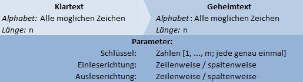
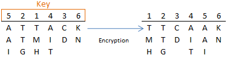
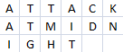
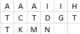
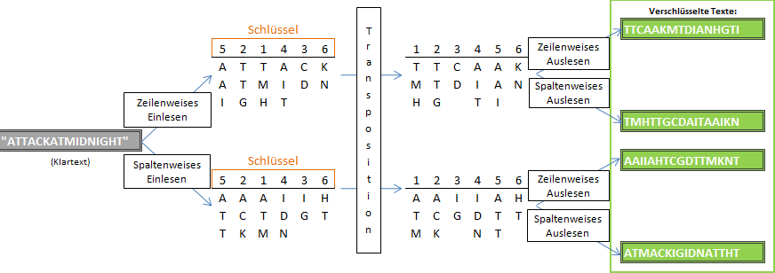
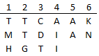
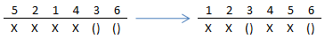

Die Transpositions-Verschlüsselung verändert die Reihenfolge der Buchstaben des Klartextes auf Grundlage des Schlüssels. Die Transposition ist eines der ältesten kryptographischen Verfahren. Ein bekanntes Beispiel ist die Skytale, die zuerst im Pelleponesischen Krieg (431 v. Chr.) dokumentiert wurde.
Die Transposition ist eine grundlegende Verschlüsselungsklasse, neben der Substitution. Es sind sehr vielfältige Ausprägungen von Transpositionschiffren denkbar, oft verwendet ist zum Beispiel die spaltenweise Transposition, welche auch der im JCrypTool implementierte Algorithmus ist.

Die spaltenweise Transposition nutzt eine sog. Transpositionstabelle, die den zu verschlüsselnden Inhalt enthält, und deren Spalten im Verlauf der Verschlüsselung entsprechend des Transpositionsschlüssels vertauscht werden. Insgesamt gibt es drei wichtige Schritte:
Wir beginnen mit dem zweiten Schritt - der Transposition der Spalten: Der Schlüssel bestimmt die Vertauschung der Spalten der Tabelle. Er besteht dabei aus Zahlen, die die gewünschte Ordnung beschreiben. Visuell kann man seine Bedeutung durch Niederschrift über der Transpositionstabelle erklären:

Die Umordnung der Spalten wird also so vorgenommen, dass die Position der Spalten nach der Verschlüsselung gleich der darüberstehenden Nummer ist.
Nun haben wir die Tabelle verschlüsselt. Wenn wir aber einen Text verschlüsseln wollen, muss dieser erst in die Tabelle eingelesen werden (erster Schritt), und anschließend wieder ausgelesen werden (dritter Schritt). Bei der spaltenweisen Transposition sind zwei Methoden üblich, dies zu tun: zeilenweises und spaltenweises Ein- und Auslesen.
Die Breite der Tabelle ist durch die Schlüssellänge festgelegt. Damit lässt sich aufgrund der Länge eines Textes sagen, wie hoch (oder: wie viele Zeilen) die Tabelle sein muss, damit der Text vollständig hineinpasst. Im Beispiel oben scheint der Klartext „ATTACKATMIDNIGHT“ (zeilenweise eingelesen) gewesen zu sein (dieses Beispiel werden wir weiterhin verwenden). Dieser Text ist 16 Zeichen lang. Der Schlüssel ist „5, 2, 1, 4, 3, 6“, also 6 Zeichen lang. Das bedeutet, die Tabelle wird 6 Spalten haben, und muss deshalb 3 Zeilen hoch sein.
Wird Text nun zeilenweise eingelesen, bekommen wir:

Wird der Text spaltenweise eingelesen, bekommen wir:

Anhand des spaltenweisen Einlesens sieht man besonders gut, dass der freie Platz immer in der letzten Zeile gelassen werden muss (wie es natürlicherweise beim zeilenweisen Einlesen geschieht).
Das Auslesen einer Tabelle (nach der Verschlüsselung) folgt analog zeilen- und spaltenweise. Leere Zellen der Tabelle werden dabei einfach ignoriert.
Nachfolgend eine Abbildung der Verschlüsselungswege des Beispieltextes mit dem Beispielschlüssel, je nachdem, welche Einlese-/Ausleserichtung gewählt wird:

Zu jedem Transpositionsschlüssel k existiert ein inverser Schlüssel, i. Verschlüsselt man eine Tabelle mit k, und dann mit i, so entsteht die Ursprungstabelle wieder. Dieser inverse Schlüssel i wird wie folgt zu k erzeugt: k hat die Länge n. Nimm eine Zahlenfolge z = „1, 2, … n“. Verschlüssele diese Zahlenfolge mit k, es entsteht die Zahlenfolge z‘ = i. Im Beispiel:
k = „5, 2, 1, 4, 3, 6“
z = „1, 2, 3, 4, 5, 6“
Die Verschlüsselung ergibt: z‘ = i = „3, 2, 5, 4, 1, 6“. Der inverse Schlüssel i zu k ist also „3, 2, 5, 4, 1, 6“.
Zur Entschlüsselung eines Textes, der mit dem Schlüssel k verschlüsselt wurde, muss man also den inversen Schlüssel i bilden, und den vorliegenden Geheimtext mit dem inversen Schlüssel „verschlüsseln“. Wichtig ist dabei natürlich auch die Kenntnis und Beachtung der Einlese- und Ausleserichtungen, die bei der Verschlüsselung angewendet wurden: Wenn der Text mit Einlesereihenfolge „spaltenweise“ und Auslesereihenfolge „zeilenweise“ verschlüsselt wurde, muss nun bei der Entschlüsselung die Einlesereihenfolge „zeilenweise“ sein, und die Auslesereihenfolge „spaltenweise“. Die meisten Computerprogramme, wie das JCrypTool, erledigen jedoch das Invertieren des Schlüssels, und das Umkehren der Lesereihenfolgen, automatisch, sodass einfach nur die Konfiguration angegeben werden muss, die auch beim Verschlüsseln verwendet wurde.
Folgendes Problem stellt sich, wenn ein Text verschlüsselt wird, der die Transpositionstabelle nicht vollständig ausfüllt:
In der letzten Zeile tauchen Leerstellen auf. Viele Algorithmen füllen solche Leerstellen mit Füllzeichen, wie „X“, oder dem Leerzeichen. Dies ist jedoch nicht unbedingt erforderlich.
Zunächst wird der verschlüsselte Text (zeilenweises Auslesen) „TTCAAKMTDIANGHTI“ lauten. Will man diesen Text entschlüsseln, so würde man ihn richtigerweise zuerst zeilenweise in eine Transpositionstabelle füllen:

Es besteht jedoch nun ein Unterschied zwischen der Tabelle, die bei der Verschlüsselung entstand, und der, die durch Wiedereinlesen des Textes (aus der Tabelle ausgelesen) entstand. Dies ist natürlich den nichtbeachteten Leerzellen zu schulden. Man muss diese nun rekonstruieren, indem man ausrechnet, wie viele Leerzellen überhaupt bei der Verschlüsselung auftraten (möglich, da man die Länge des Textes kennt), und die Verschlüsselung der letzten Zeile nachstellt. Im Beispiel:
Länge des Textes: 16; Schlüssellänge: 6 -> Tabelle mit 6
Spalten und 3 Zeilen -> zwei Leerzellen
Nachstellung der Verschlüsselung: () = Leerzelle, X = unwichtig, irgend ein
Zeichen aus dem Text – interessant sind nur die Leerzellen.

Das bedeutet, dass beim Wiedereinfügen des Geheimtextes die Zellen 3 und 6 der untersten Zeile nicht belegt werden dürfen. Die Tabelle, die wirklich auch bei der Verschlüsselung als Ergebnis entstanden ist, kann so wieder erzeugt werden, und damit ist die Ver- und Entschlüsselung verlustfrei, auch ohne Füllzeichen.